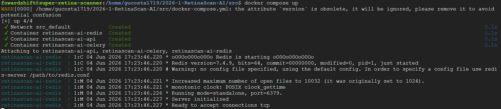
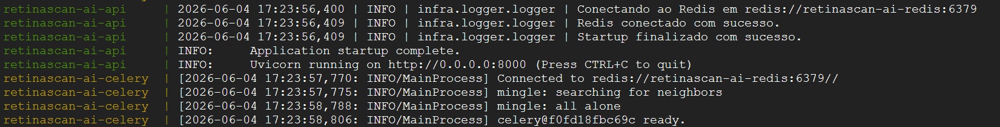
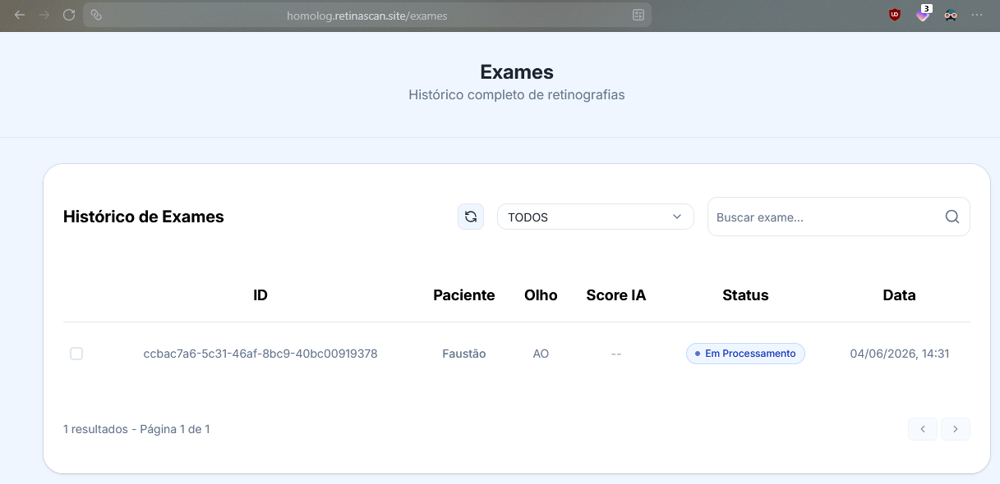
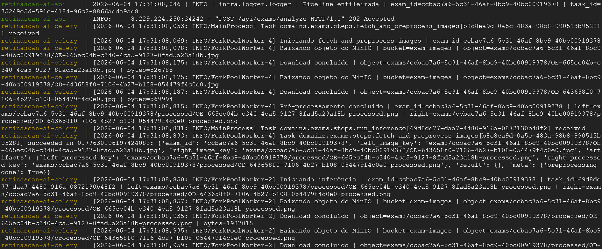
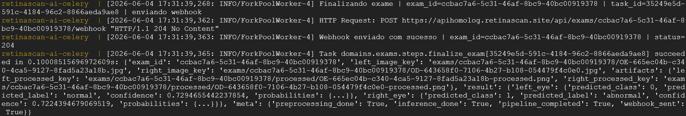
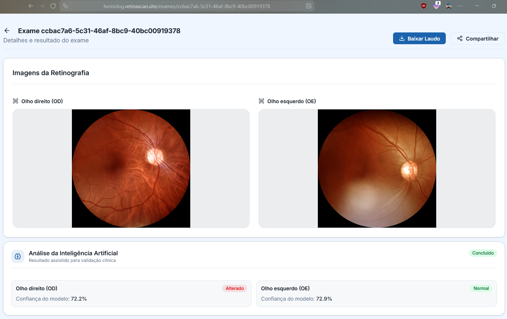

Migração da Infraestrutura de IA para Google Cloud
Objetivo
Este documento descreve o processo de migração do serviço de Inteligência Artificial do projeto, anteriormente executado em uma máquina pessoal de um dos integrantes da equipe, para a infraestrutura da Google Cloud Platform (GCP).
A mudança teve como objetivo aumentar a disponibilidade do serviço, centralizar a infraestrutura e reduzir a dependência de recursos locais.
Arquitetura Anterior
Anteriormente, o modelo de IA era executado em uma máquina pessoal pertencente a um integrante da equipe.
Limitações
- Dependência da disponibilidade do computador do integrante.
- Possibilidade de indisponibilidade devido a desligamentos ou falhas locais.
- Dificuldade de monitoramento contínuo.
- Escalabilidade limitada.
- Processo de manutenção dependente de acesso ao equipamento físico.
Nova Arquitetura
A aplicação foi migrada para a Google Cloud Platform.
Componentes Utilizados
- Google Compute Engine (VM)
- Docker
- Modelo de IA
Benefícios
- Maior disponibilidade do serviço.
- Infraestrutura centralizada.
- Facilidade de monitoramento.
- Possibilidade de escalabilidade futura.
- Independência de recursos pessoais dos integrantes.
Configuração do Ambiente
Provisionamento da Máquina Virtual
Foi criada uma instância na Google Cloud com as seguintes especificações:
- Sistema operacional
Debian 12 v20260528 - Tipo da Máquina
e2-custom-4-8192 (4 vCPUs, 8 GB Memory) - Plataforma da CPU
Intel Broadwell
Configuração da Rede
Através do Google Cloud Console, foram configuradas as regras necessárias para:
- Acesso SSH para administração.
- Exposição das portas utilizadas pelo serviço.
Processo de Deploy
1. Acesso à Instância
gcloud compute ssh super-retina-scanner
2. Obtenção do Código
git clone https://github.com/fga-eps-mds/2026-1-RetinaScan-Ai.git
cd 2026-1-RetinaScan-Ai
3. Configuração das Variáveis
Criado o arquivo .env com os seguintes campos:
APP_NAME=
VERSION=
ALLOWED_ORIGINS=
REDIS_URL=
MINIO_ENDPOINT=
MINIO_PORT=
MINIO_SECURE=
MINIO_ACCESS_KEY=
MINIO_SECRET_KEY=
MINIO_PUBLIC_URL=
MINIO_BUCKET_EXAMS=
WEBHOOK_URL=
4. Inicialização dos Serviços
docker compose up -d
5. Verificação dos Containers
docker ps
6. Verificação dos Logs
docker compose logs -f
Validação Funcional
Após a implantação, foram realizados testes para validar o funcionamento da IA.
Testes Executados
| Teste | Resultado |
|---|---|
| Inicialização dos containers | Sucesso |
| Conexão com o REDIS | Sucesso |
| Processamento de requisições | Sucesso |
| Retorno de respostas esperadas | Sucesso |
Evidências
Container iniciado:

Conexão com o REDIS:

Criação de um exame pelo site do projeto:

Imagem em processamento:

Processamento da imagem finalizado:

Resultado no website:

Resultado
O serviço apresentou comportamento compatível com o ambiente anterior, mantendo as funcionalidades esperadas após a migração para a nuvem.
Critérios de Aceitação
| Critério | Status |
|---|---|
| IA implantada e em execução na Google Cloud | ✅ |
| Recursos necessários configurados corretamente | ✅ |
| Serviço acessível no ambiente de nuvem | ✅ |
| Processo de deploy documentado | ✅ |
| Logs disponíveis para monitoramento e diagnóstico | ✅ |
| Validação funcional realizada | ✅ |
| Ausência de erros críticos para produção | ✅ |
Conclusão
A migração do serviço de Inteligência Artificial para a Google Cloud foi concluída com sucesso. O ambiente encontra-se operacional, acessível e monitorável, eliminando a dependência da infraestrutura pessoal anteriormente utilizada e proporcionando maior confiabilidade para a execução do serviço.